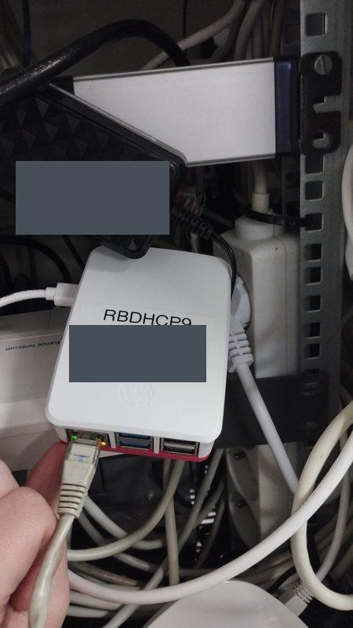
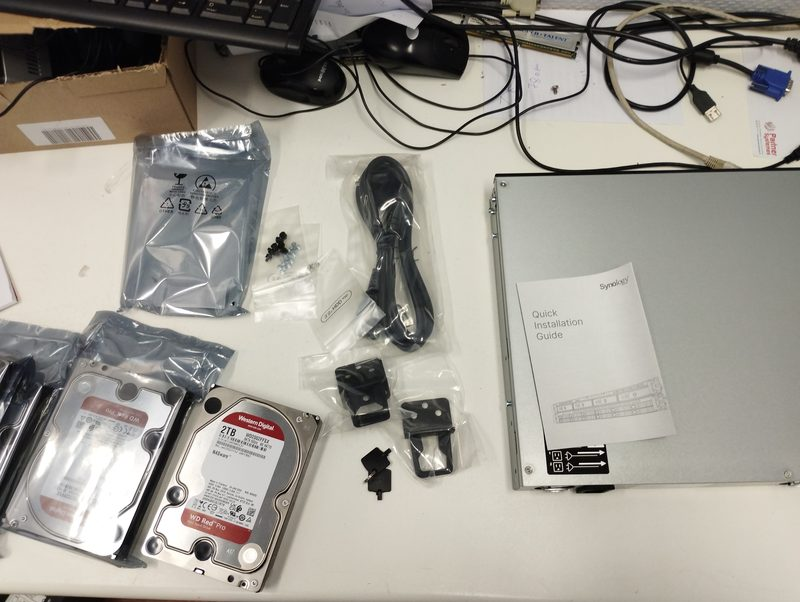
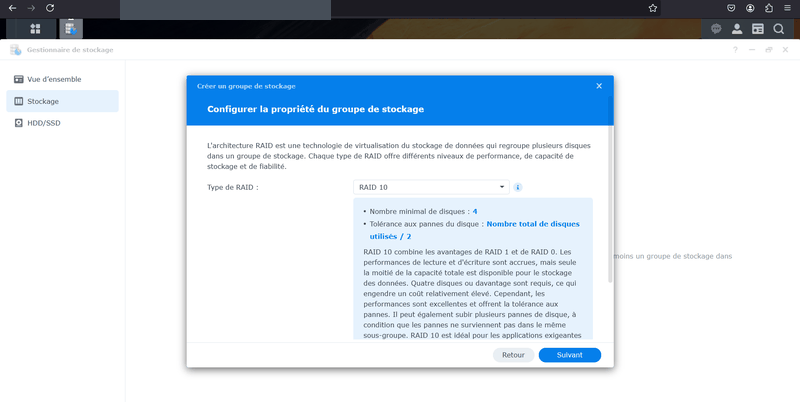
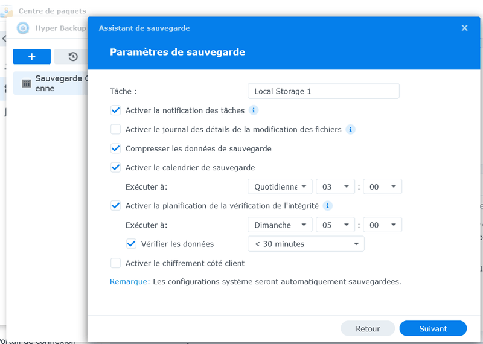
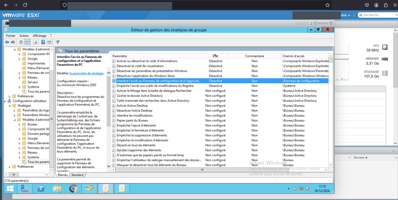

Mirwais Cassart
Technicien informatique junior · Support, systèmes & réseaux · BTS SIO SISR
Diplômé d'un BTS SIO option SISR, j'ai effectué deux stages dans l'équipe informatique d'une association de 350 postes : Active Directory, supervision Zabbix, sauvegardes et PRA, support N1/N2. Je m'intéresse à la cybersécurité et je sais expliquer l'informatique à des non-techniciens grâce à mon service civique de médiateur numérique. Je recherche un poste en CDI ou CDD.
Stage APEI & projets
Missions de mes deux stages à l'APEI Les Papillons Blancs (Maubeuge), réalisées au sein de l'équipe informatique, puis un projet d'équipe du BTS.
Durcissement d'Active Directory (GPO, MFA)
Participation, avec l'équipe informatique, au durcissement de l'Active Directory de l'association (Windows Server) : restrictions par stratégies de groupe et authentification multifacteur.
- Participation à la mise en place de GPO : restrictions d'accès, droits des utilisateurs
- Participation au déploiement de l'authentification multifacteur (MFA)
- Gestion des rôles et des comptes utilisateurs sous Active Directory
- Documentation des procédures
Supervision Zabbix sur Raspberry Pi
Mise en place d'une supervision Zabbix (serveur sur Raspberry Pi) pour suivre les services DHCP/DNS de l'association, déployée sur 4 sites.
- Zabbix installé et configuré sur Raspberry Pi, déployé sur 4 sites
- Supervision DHCP/DNS avec alertes
- Logs centralisés et sauvegardés sur NAS Synology
- Serveur DHCP sur Raspberry Pi · procédure de déploiement rédigée
NAS Synology RS422+ & PRA
Configuration d'un NAS Synology RS422+ et participation à la mise en place d'un plan de reprise d'activité, avec sauvegardes automatisées.
- NAS RS422+ : groupe RAID 10, dossiers partagés
- Sauvegardes automatisées (Hyper Backup) : tous les jours à 3 h, vérification d'intégrité le dimanche
- Conservation des sauvegardes : 9 mois
- Participation à la mise en place du plan de reprise d'activité (PRA)
Support utilisateurs et parc informatique
Support N1/N2 au quotidien et gestion du parc : déploiement de postes, inventaire, documentation pour les utilisateurs.
- Support N1/N2 : pannes matérielles, logicielles et réseau, imprimantes
- Déploiement de postes avec MDT ; utilisation de VMware et VirtualBox
- Inventaire du parc et adressage IP ; script de mappage des lecteurs réseau
- Note d'information destinée aux utilisateurs
Projet d'AP « GSB » : AD, DNS, Wi-Fi, PowerShell
Projet d'équipe réalisé pendant le BTS (cas d'étude GSB, hors stage) : infrastructure étudiée d'un laboratoire pharmaceutique de plus de 2 000 utilisateurs.
- Active Directory : unités d'organisation, partages, politiques de sécurité
- DNS BIND9 sous Linux, projet suivi avec la méthode Kanban
- Wi-Fi WPA2-Enterprise intégré à l'Active Directory
- Création de comptes par script PowerShell (règles de nommage, rangement par UO)
Terrain APEI
Quelques captures de mes stages. Les adresses et informations internes de l'association sont masquées.





Compétences
Systèmes & Sécurité
Réseaux
Virtualisation & matériel
Support, scripting & outils
Expérience
- Accompagnement des usagers sur les outils numériques et les démarches en ligne
- Sensibilisation aux bonnes pratiques de cybersécurité
- Gestion et test d'un lot de 20 ordinateurs portables Lenovo ThinkPad reçus en don
- Création de « L'Atelier numérique », un site d'exercices (souris, clavier, frappe) pour utilisateurs débutants, depuis septembre 2026
- Participation au durcissement de l'Active Directory : GPO, MFA, gestion des rôles
- Supervision Zabbix (serveur sur Raspberry Pi) sur 4 sites : DHCP/DNS, logs centralisés sur NAS, procédure de déploiement rédigée
- Participation à la mise en place d'un plan de reprise d'activité (PRA) : sauvegardes automatisées sur NAS Synology
- Serveur DHCP sur Raspberry Pi ; inventaire du parc et adressage IP ; script de mappage des lecteurs
- Maintenance d'imprimantes sur site ; note d'information utilisateurs ; documentation technique
- Support N1/N2 : pannes matérielles, logicielles et réseau
- Installation et configuration de postes, serveurs et périphériques (imprimantes, scanners, vidéoprojecteurs) ; ajout de RAM
- Déploiement de postes avec Microsoft Deployment Toolkit (MDT)
- Utilisation d'hyperviseurs VMware et VirtualBox (machines virtuelles)
- Configuration d'un NAS Synology RS422+ : RAID, dossiers partagés, sauvegardes
- Inventaire du parc réseau sous Excel ; gestion de comptes utilisateurs sous Active Directory
Maintenance télécoms (SNCF Réseau), maintenance industrielle (Framatome), support N1/N2 (Lyreco), dépannage informatique et base de données SQL (PC Crash).
Diplômes
Attestation et certification
Un poste à pourvoir ?
Discutons-en.
Je recherche un poste de technicien informatique junior (support, systèmes & réseaux) en CDI ou CDD, disponible dès le 23 novembre 2026.
Secteur : Maubeuge · Lille et alentours (Hauts-de-France)